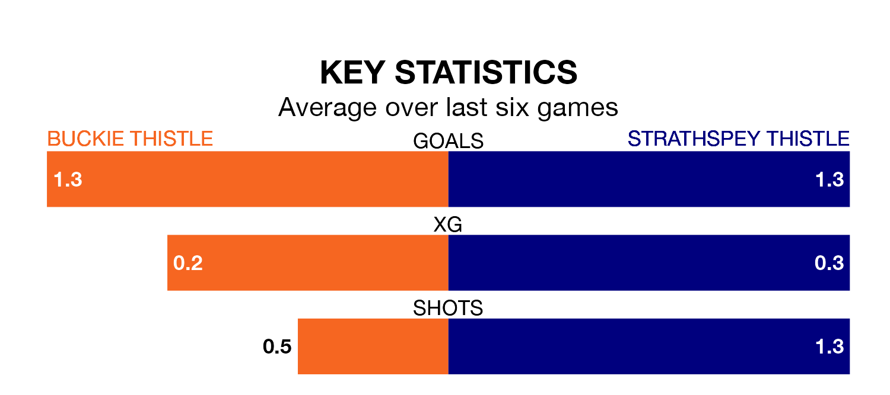

Relegation candidates Strathspey Thistle face a challenge away against high-flying Buckie Thistle at Victoria Park on Wednesday.
Strathspey Thistle are rooted to the bottom of the Highland Football League table, and have picked up five wins and one draw in their 29 games to date.
Buckie Thistle, meanwhile, are fourth in the standings with 63 points, having won 20 and drawn three of their first 28 matches, and are nine points behind table-toppers Brechin City.
With 73 goals in 28 games so far this season, Buckie Thistle are scoring more than average in the league with 2.6 goals per game. And they are conceding fewer than average, letting in 32 goals at a rate of 1.1 per game.
Strathspey Thistle, meanwhile, are below average scorers, with 1.1 goals per game, compared to a league average of 1.8. They have conceded 3.6 goals per game.
In the last 10 years, Buckie Thistle and Strathspey Thistle have played each other on 12 occasions. Buckie Thistle won 10 of them, Strathspey Thistle one, and they drew once.
On average, Buckie Thistle scored 5.0 goals and Strathspey Thistle 1.0 in those matches.
Their last meeting was on April 8, when Buckie Thistle won 2-0 away.
The home side are in reasonable form in the Highland Football League, with three wins and two draws from their last six games.
With three wins and three losses over that period, the visitors' form is slightly worse – they have taken nine points from 18, compared to Buckie Thistle's 11.
Buckie Thistle's last match was on Saturday, a 0-0 draw against Deveronvale.
Strathspey Thistle lost 4-0 against Nairn County last time out, also on Saturday.
Updated: 10:31 (UTC), 31/03/24